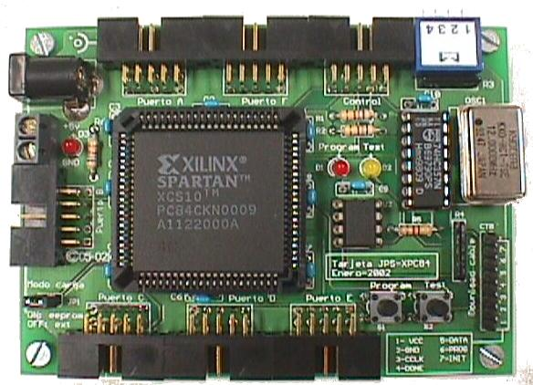
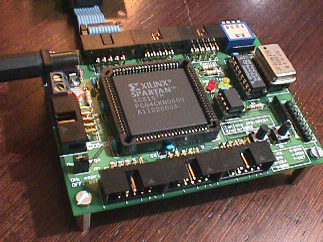
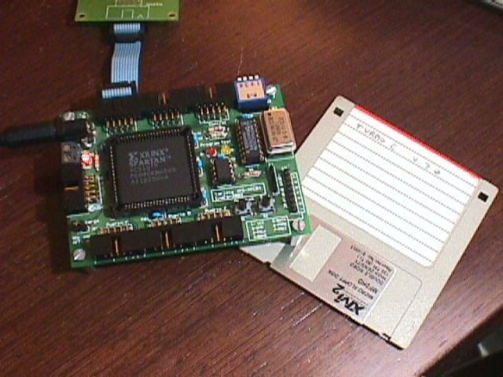
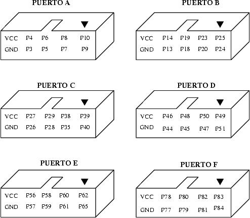

| TARJETA JPS-XPC84: Entrenadora para FPGA |
| [Introducción] | [caracteristicas] | [Autores] | [Licencia] | [Aplicaciones] | [Puertos] | [Download] | [Links] | [Noticias] | [Agradecimientos] |

Proyecto desarrollado para la asignatura de doctorado "Diseño de Sistemas Reconfigurables de Alta Velocidad", curso 2001-2002, impartido en la E.T.S de Informática de la UAM, por el profesor D. Eduardo Boemo Scalvinoni.
Para implementar circuitos para las FPGA's se pueden utilizar programas de simulación, como los proporcionados por Xilinx. Este proyecto surge para ayudar a los estudiantes o la gente interesada en el mundo de las FPGA's a llevar sus diseños de la simulación a la realidad. En mi caso particular es casi una necesidad el poder "tocar" el hardware que se esta desarrollando. Necesitaba disponer de una plataforma para poder probar "en la realidad" los diseños sintetizados.
Se ha desarrollado una tarjeta entrenadora muy básica, que permite funcionar tanto en modo autónomo (el bitstream se almacena en una memoria eeprom serie) o en modo conexión al PC (lo que permite descargar los diseños usando en "download" cable de Xilinx y la herramienta Foundation). Mi intencion personal es utilizar FPGA's en robots, por lo que es muy importante que puede funcionar en modo autónomo.
Aqui se muestran dos fotos. En la foto de la derecha se ha incluido un disquete para hacerse una idea del tamaño que tiene: |
 |
La tarjeta JPS-XPC84 es HARDWARE ABIERTO y tiene una licencia GPL (o lo mas parecido pero en versión Hardware). Esto quiere decir que se distribuye junto con TODOS sus esquemas (esquemáticos, rutado y ficheros de fabricación). Cualquiera tiene derecho a fabricarla, copiarla, modificarla, distribuirla o venderla siempre y cuando vaya acompañada de TODOS los esquemas.
La licencia GPL otorga todas las libertades comentadas anteriormente, sin embargo el copyright sigue siendo de los autores. Y esto tiene que ser así para que ninguna empresa u organización se "apropie" del diseño y no permita su libre distribución.
La tarjeta JPS dispone de 6 puertos de expansión. A continuación se muestran las señales que salen por cada uno de ellos. Las que comienzan por P son pines de la FPGA.

| TARJETA JPS-XPC84 |
| jps-xpc84-v1.0-pro-sch.pdf (138KB) | Esquema en pdf |
| jps-xpc84-v1.0-pro-brd1.pdf (168KB) | Serigrafias del PCB. |
| jps-xpc84-v1.0-pro-brd2.pdf (230KB) | PCB. Cara de los componentes. Formato PDF |
| jps-xpc84-v1.0-pro-brd3.pdf (232KB) | PCB. Cara de abajo. Formato PDF |
| esquemas.zip (36KB) | Esquematico y PCB para el EAGLE |
| fabricacion.zip (89KB) | Ficheros en formato GERBER y plano de taladros para la fabricacion |
| DOCUMENTACIÓN Y EJEMPLOS |
| manual-jps-xpc84.pdf (1.2MB) | Manual de la tarjeta JPS-XPC84. Bajo licencia FDL |
| manual-jps-1.0.tgz (2.9MB) | Fichero fuente (para Lyx) y figuras (Xfig). |
| inversor.vhd (773 Bytes) | Un inversor de ejemplo en VHDL |
| inversor.ucf (49 Bytes) | Fichero de restricciones para el inversor. Conexión al pulsador y led de pruebas |
| inversor.hex (23 KB) | Bitstream del inversor en hexadecimal. Sintentizado para una FPGA XCS10. |
| inversor.bit (12 KB) | Bitstream del inversor. Sintentizado para una FPGA XCS10. |
| inversor.mcs (33 KB) | Fichero en formato HEX de Intel para grabar en la EEPROM. (Para una FPGA XCS10) |